BluEvolution 73
Klasyczny wygląd, dobre parametry cieplne i atrakcyjna cena. Szyba zespolona do 44 mm.
- Głębokość
- 73 mm
- Komory
- 5
- Uszczelki
- 2
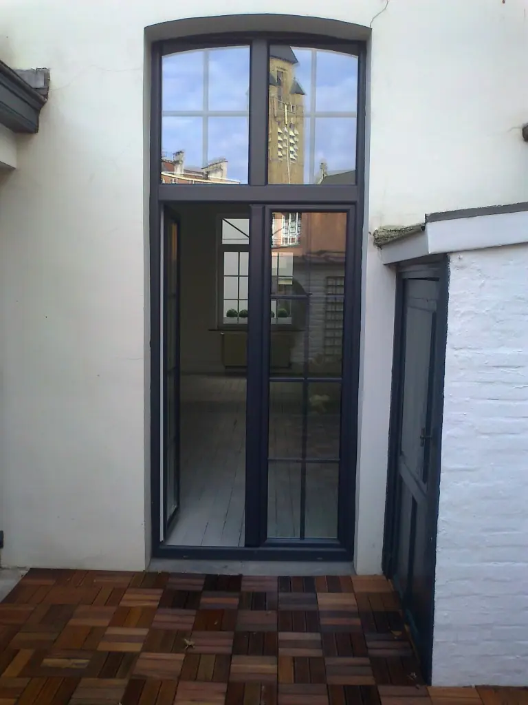
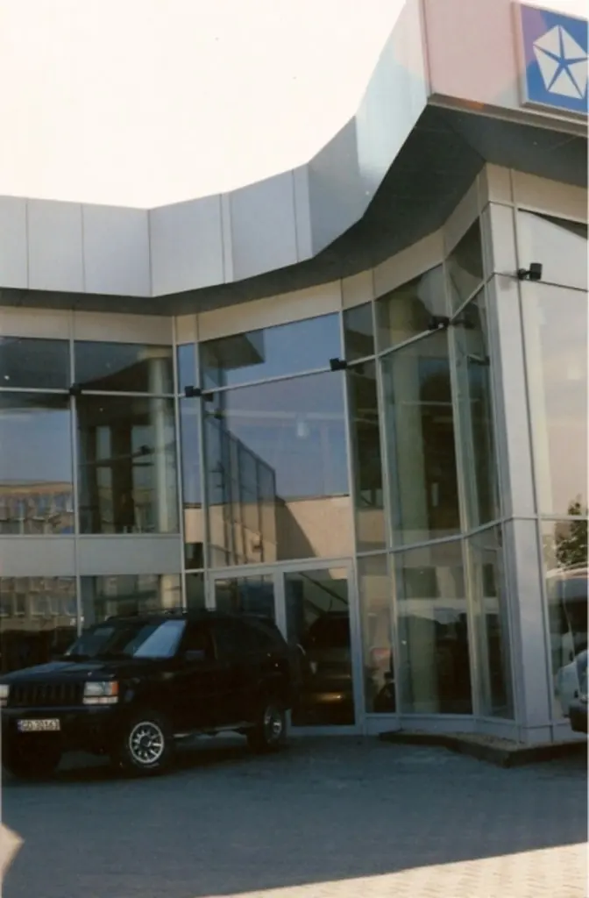
Od 1995 roku robimy okna na profilach Salamander, stolarkę aluminiową i rolety zewnętrzne - dla domów, deweloperów i instytucji w Polsce, Belgii, Niemczech, Szwecji i Francji.
Produkujemy okna w czterech systemach niemieckiej firmy Salamander - od klasycznego BluEvolution 73 po BluEvolution 92 do domów energooszczędnych i pasywnych. Każdy profil ma klasę A, wzmocnienia ze stali i szeroki wybór kolorów oraz oklein drewnopodobnych.
Na schematach poniżej widać różnicę między systemami: głębokość profilu i liczbę komór, od których zależy, ile ciepła ucieka przez ramę.
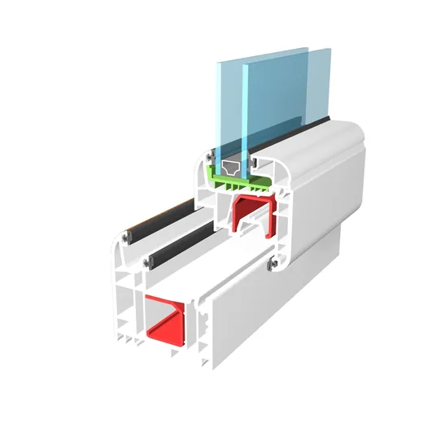
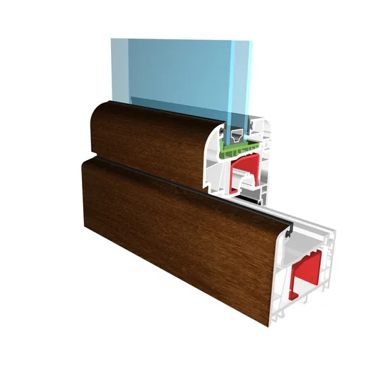
Klasyczny wygląd, dobre parametry cieplne i atrakcyjna cena. Szyba zespolona do 44 mm.
Klasyczna rama z delikatnym, zaokrąglonym skrzydłem. Uszczelki termozgrzewalne w jasnej szarości.
Zaokrąglone profile ramy, skrzydła i listwy, które w okleinie wyglądają jak okna drewniane. Częsty wybór przy renowacji starszych budynków.
Okno do budynków energooszczędnych i pasywnych. Wypełnienie skrzydła do 66 mm i niskie złożenie ramy, które wpuszcza więcej światła.
Schematy są poglądowe: pokazują głębokość profilu i liczbę komór z kart systemów. Dokładne parametry okna zależą od wybranego pakietu szyb i okuć.
Witryny, drzwi, ścianki i ogrody zimowe na systemach Aluprof, a do każdego okna rolety, które chronią przed włamaniem, upałem i hałasem.
W wersji z termoizolacją i bez, w kolorach z palety lakierowanej proszkowo albo anodowanej. Profile można giąć, więc robimy też konstrukcje łukowe.
Pasują do nowych i starych budynków, biur, zakładów i obiektów zabytkowych. Bogata kolorystyka pozwala dobrać je do elewacji.
Okna i stolarka dla klientów indywidualnych, deweloperów i instytucji - w Trójmieście i za granicą. Kliknij zdjęcie, żeby je powiększyć.
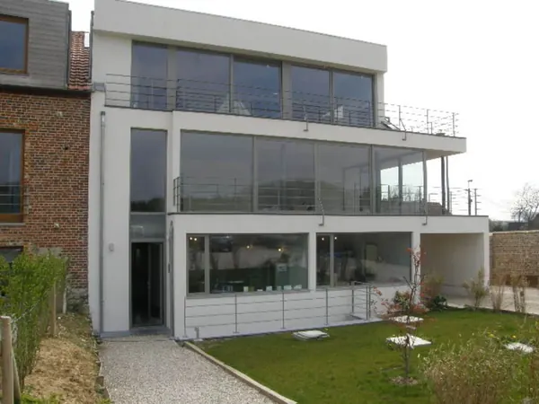
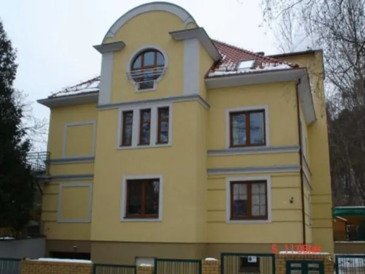
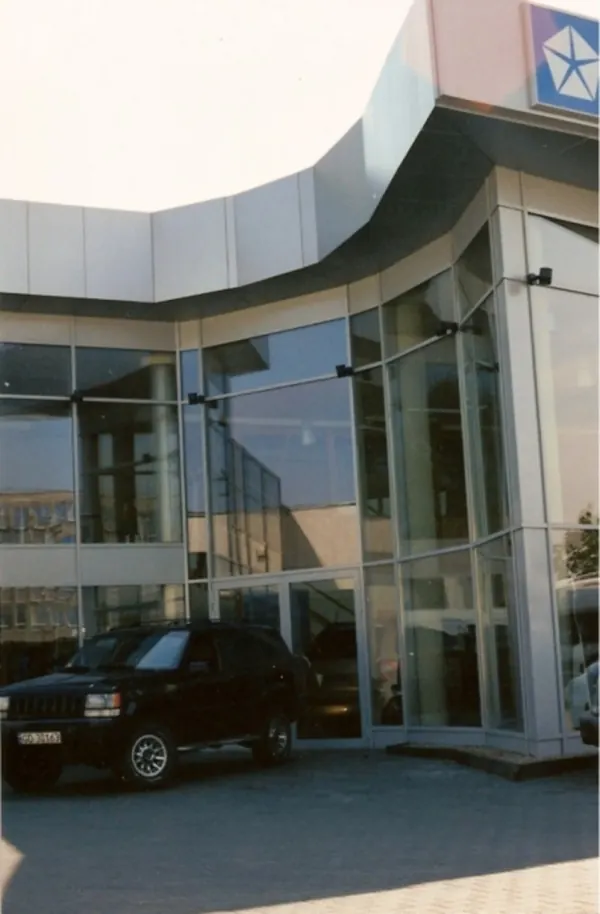
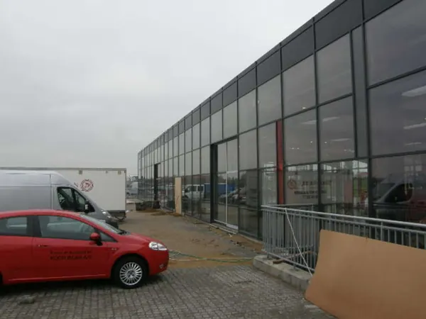
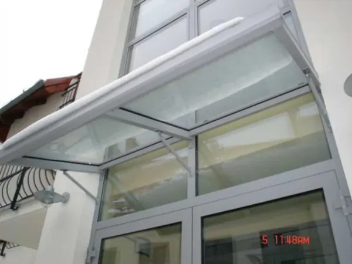
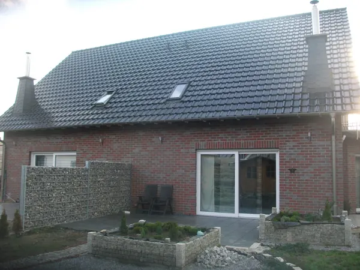
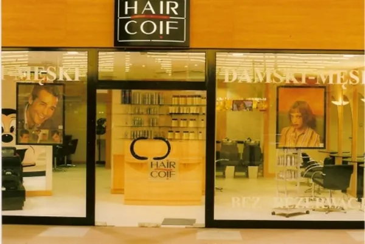
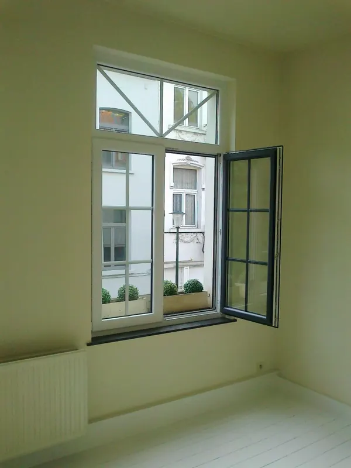
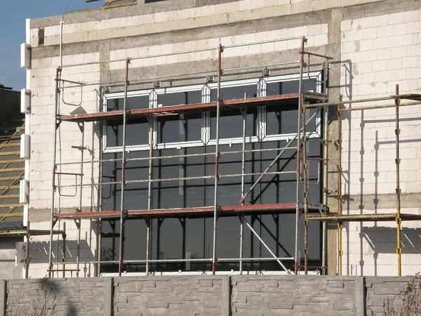
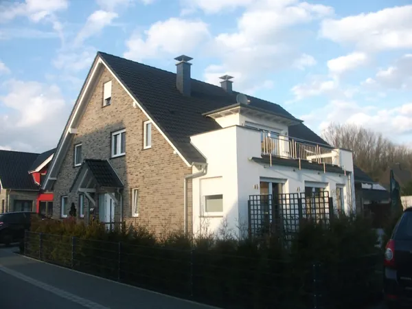
Stolarkę okienną produkujemy od 1995 roku w Glinczu koło Żukowa. Mamy własny park maszynowy, wykwalifikowaną kadrę i własne ekipy monterskie, więc okno przechodzi od zamówienia do montażu w jednych rękach.
Wielu stałych odbiorców mamy w Belgii, Niemczech, Szwecji i Francji. Robimy dla klientów indywidualnych, deweloperów i instytucji. Doradzimy, który system i pakiet szyb pasuje do Państwa budynku.
Napiszcie, ile okien lub drzwi potrzebujecie, w jakich wymiarach i do jakiego budynku. Odpowiemy z wyceną i doradzimy system.